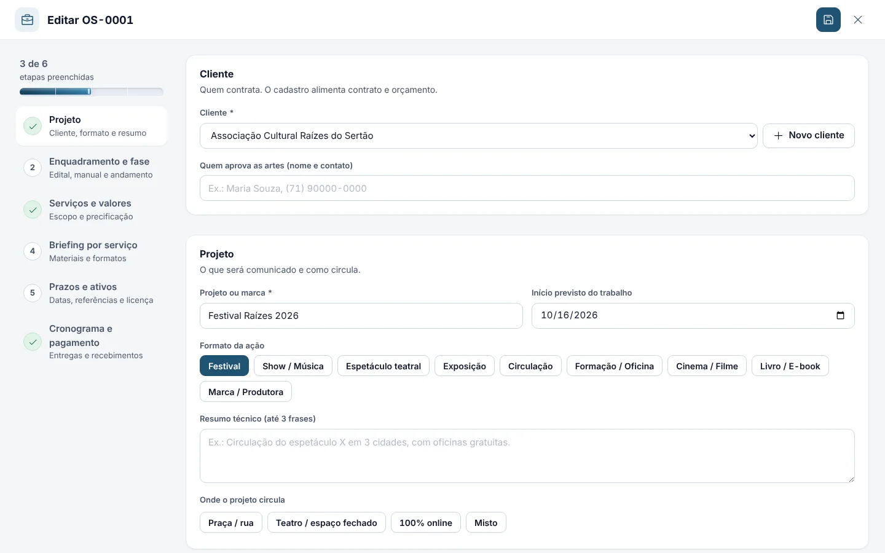
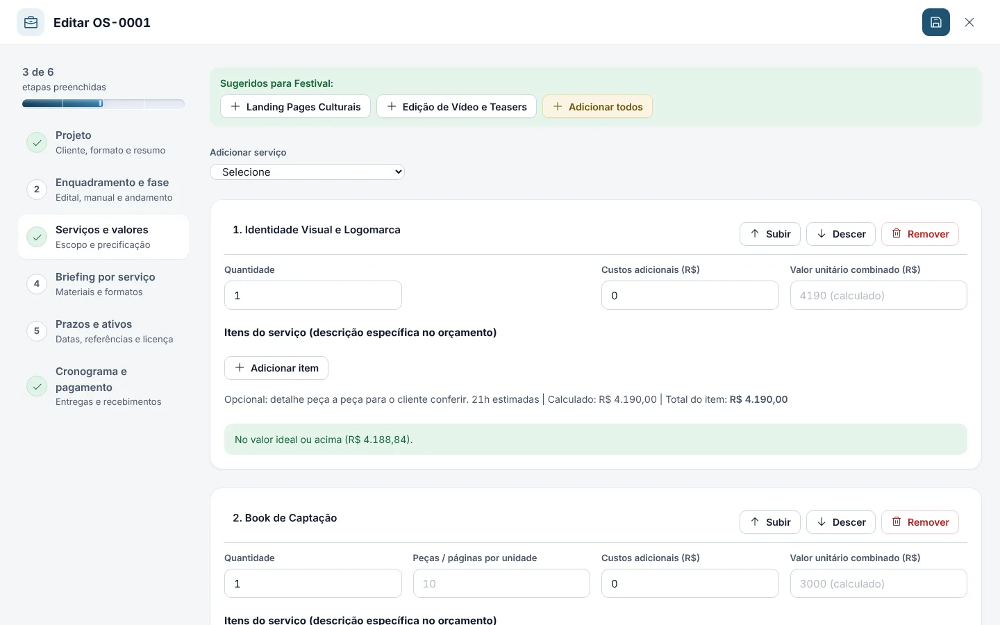
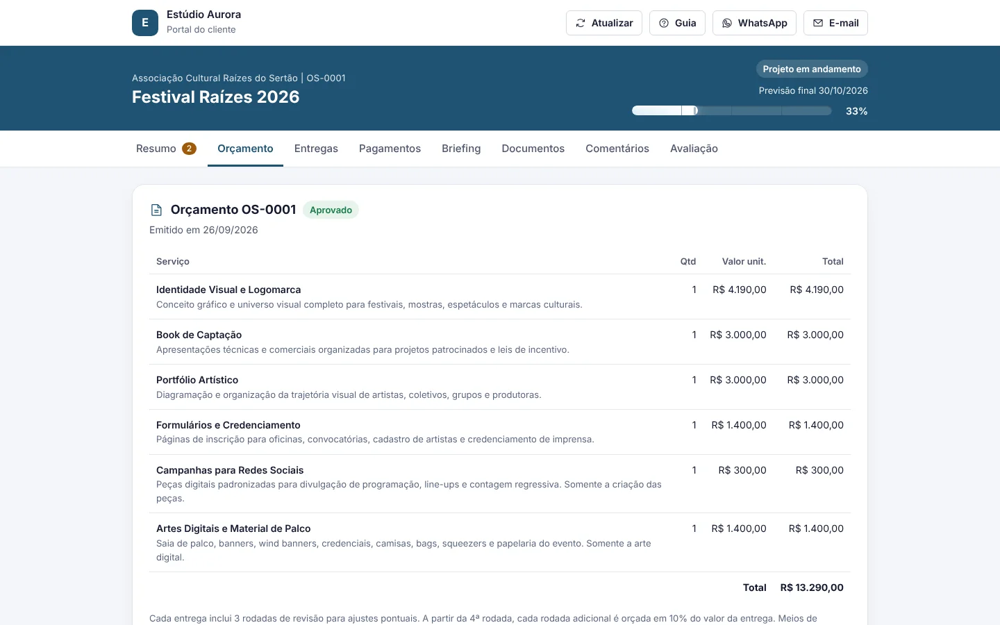
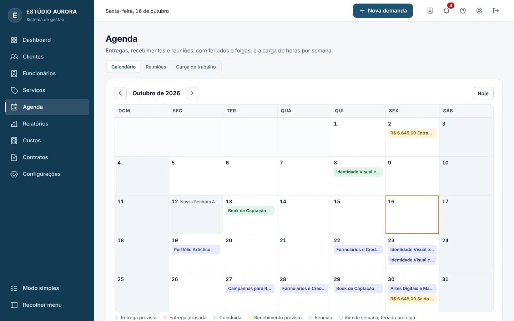
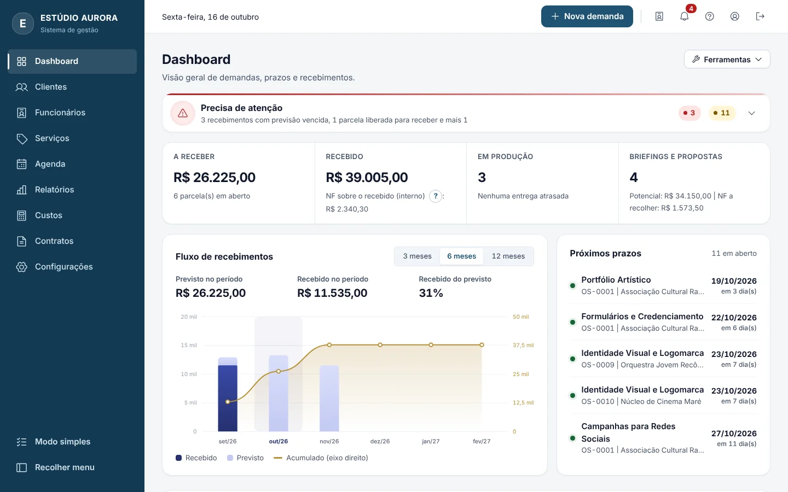
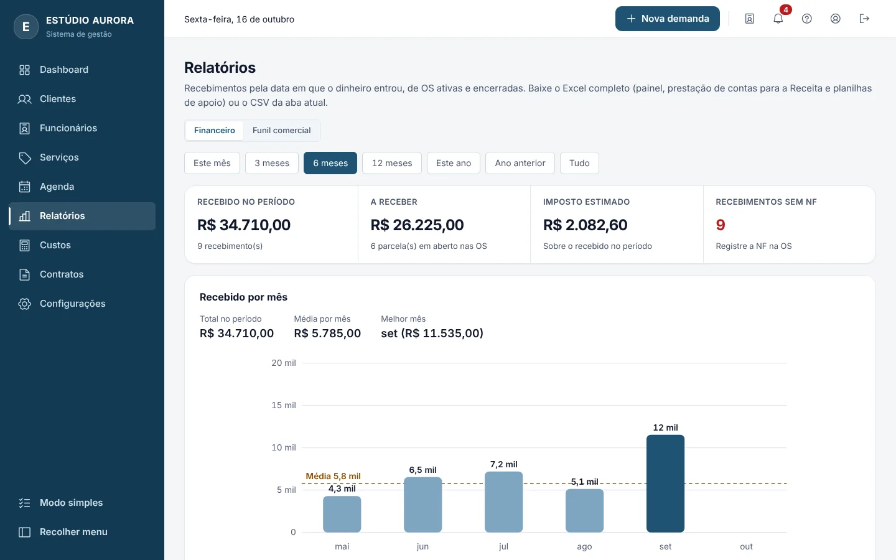

Dashboard
- Quatro indicadores: a receber, recebido, em produção e briefings e propostas
- Fluxo de recebimentos de 3, 6 ou 12 meses, com recebido, previsto e acumulado
- Próximos prazos, da entrega mais urgente para a menos urgente
Criativos - Sistema de gestão é o painel de quem cria para clientes. Ele calcula o preço do trabalho, monta orçamento, cronograma e contrato, acompanha cada entrega e avisa quando chegou a hora de cobrar.






Briefing em 6 etapas
Orçamento gerado do próprio briefing
Total, validade de 15 diasR$ 13.290,00
O cliente aprova pelo portal
Entrada (50%) liberada para cobrançaR$ 6.645,00
Entregas em sequência, em dias úteis
Entregas concluídas0 de 4
Recebimento confirmado
RecebidoR$ 6.645,00
Ordem de serviço concluída
Taxa de conversão do período78%
Em menos de um minuto: do painel ao briefing, do preço calculado ao cronograma, da agenda ao funil comercial. Tudo gravado no sistema real, com dados fictícios.
Planilha de preços, conversa de WhatsApp, orçamento em um arquivo, contrato em outro, cobrança na memória. Cada pedaço é digitado de novo e a informação começa a divergir.
No sistema, cada demanda reúne tudo. O que você cadastra uma vez, como seus custos, seus serviços e seus clientes, é reaproveitado em todos os documentos e avisos dali em diante.
Passe o mouse ou use o teclado sobre um cadastro para ver onde ele reaparece. A simulação percorre todos sozinha.
Perfil profissional: cabeçalho do orçamento e da ordem de pagamento, dados da Contratada no contrato, chave Pix e link de emissão de nota fiscal.
Toda demanda tem fases e números próprios. Clique em uma fase para ver como ela começa, como termina e o que o sistema faz sozinho.
Enviados, aprovados, recusados e em aberto, com a variação em relação ao período anterior e os motivos de recusa. A taxa de conversão conta só os orçamentos já decididos.
Recusados0
Em aberto0
Serviço de 21 horas, com as mesmas regras do sistema. Mexa nos controles ou deixe rodar.
| Valor da hora mínima | R$ 50,00 |
|---|---|
| Custo mínimo (21 h) | R$ 1.050,00 |
| Lucro | R$ 450,00 |
| Negociação | R$ 150,00 |
| Imposto | R$ 105,32 |
| Valor sugerido | R$ 1.760,00 |
Hora mínima = meta ÷ (6 horas por dia × 20 dias úteis). Lucro = custo ÷ (1 − margem) − custo. O valor sugerido sobe para o próximo múltiplo de R$ 10.
As entregas são sequenciais. Fins de semana e feriados não contam, e cada entrega inclui 2 dias para aprovação.
Duração = horas ÷ horas por dia (arredondado para cima) + dias de aprovação.
Escolha um módulo e percorra os recursos dele. A tela ao lado muda junto, e cada imagem é do sistema em funcionamento.
Recurso 1 de 7
Recurso 1 de 4
Recurso 1 de 3
Recurso 1 de 3
Recurso 1 de 4
Recurso 1 de 3
Recurso 1 de 4
O cliente acompanha e aprova por um link próprio, sem cadastro. A equipe trabalha por um acesso separado. A empresa decide o que cada um enxerga.
Acompanhe a simulação: o cliente abre o link da demanda, aprova uma entrega e o aviso chega ao sino do sistema, com a anotação pronta para concluir a entrega.
Festival Raízes 2026
Portfólio Artístico
Aguardando sua aprovação
Uma página privada por demanda. O cliente acompanha o projeto, aprova o orçamento e as entregas, paga com Pix, envia materiais, comenta e avalia. Custos, horas, margens e imposto nunca aparecem.
Cinco papéis, de quem decide a quem só acompanha. Passe o mouse ou o foco em um papel para destacar o que ele faz.
| Papel | Demandas e clientes | Valores e custos | Página Funcionários | Convidar pessoas | O que aprova |
|---|---|---|---|---|---|
| Dono | Todas | Sim | Sim | Qualquer papel | Demandas criadas por funcionários |
| Administrador | Todas | Sim | Sim | Só membros | Demandas criadas por funcionários |
| Membro | Todas | Sim | Não | Não | Não se aplica |
| Colaborador | Só as que atua | Não | Não | Não | Cria demandas, que aguardam aprovação |
| Cliente | Só o projeto dele | Nunca custos, horas e margens | Não | Não | Orçamento e entregas |
| Proteção | Como funciona |
|---|---|
| Código de acesso | Conferido só no servidor, comparado com um hash. Nunca viaja para o navegador. |
| Tentativas | Cinco falhas bloqueiam o endereço por 15 minutos. |
| Sessão | Assinada pelo servidor, válida por 12 horas e renovada pelo uso, com teto de 7 dias. |
| Duas abas | Se outra aba alterou o mesmo registro, o sistema combina os campos alterados em vez de sobrescrever. |
| Link do portal | Código aleatório de 256 bits, com hash guardado no servidor. A página não é indexada. |
| Privacidade | Aviso ao cliente com a ciência registrada. Portal desativado é apagado do servidor após 60 dias. |
| Recuperação | Lixeira de 30 dias, backup exportável e cópia automática antes de zerar o sistema. |
Menos retrabalho, prazos que se calculam sozinhos e o cliente sempre informado.
Exemplo ilustrativo Depoimentos e números desta seção são fictícios e serão trocados por casos reais.
Eu digitava o mesmo briefing em quatro lugares. Hoje cadastro uma vez, e o orçamento, o cronograma e o contrato já saem prontos.
O cliente aprova pelo link e eu sou avisado na hora. Parei de perguntar por mensagem se ele tinha visto.
Pelo funil eu vejo quais orçamentos viram contrato e por que os outros foram recusados. Isso mudou meu jeito de negociar.
A equipe vê só as demandas em que atua, sem valores. Eu decido o que cada pessoa enxerga e aprovo o que ela cria.
Cada plano inclui o anterior e acrescenta recursos. O servidor libera apenas o que o plano da empresa permite.
| Recurso | Básico | Pro | Master |
|---|---|---|---|
| Pessoas com acesso ao sistema | 2 | 6 | 30 |
| Clientes cadastrados | 100 | 1.000 | Sem limite |
| Demandas, orçamentos e clientes | Sim | Sim | Sim |
| Catálogo de serviços e custos | Sim | Sim | Sim |
| Contratos com o cliente | Sim | Sim | Sim |
| Portal do cliente | Não | Sim | Sim |
| Assinatura eletrônica do contrato | Não | Sim | Sim |
| Equipe: cadastro, pagamentos e contratos | Não | Sim | Sim |
| Cláusulas próprias nos contratos da equipe | Não | Sim | Sim |
| Arquivos no Google Drive | Não | Sim | Sim |
| Briefing criativo | Não | Sim | Sim |
| Reuniões na agenda | Não | Sim | Sim |
| Relatórios em Excel | Não | Sim | Sim |
| Histórico de ações, quem fez o quê | Não | Sim | Sim |
| E-mail com layout da empresa | Não | Sim | Sim |
| Portal do funcionário | Não | Não | Sim |
| Manual de marca (ART) | Não | Não | Sim |
| Testar o Básico | Testar o Pro | Testar o Master |
| Na rotina | Planilhas e conversas soltas | Criativos - Sistema de gestão |
|---|---|---|
| Preço do serviço | Digitado de memória ou copiado do último trabalho | Calculado a partir dos seus custos, da sua meta e das suas margens |
| Orçamento | Um arquivo novo a cada ajuste | Versões guardadas: v1 congelada, v2 com o que mudou |
| Prazo | Data estimada à mão | Cronograma em dias úteis, com feriados e folgas |
| Contrato | Redigido de novo a cada cliente | Preenchido com os dados do cliente e da demanda |
| Cobrança | Lembrar de cobrar | Aviso quando o gatilho da parcela é cumprido |
| Cliente acompanha | Pergunta por mensagem a cada dúvida | Portal com link próprio, aprovações e pagamento por Pix |
| Financeiro | Planilha separada, atualizada depois | Relatórios gerados dos recebimentos reais, com exportação para Excel |
Os dados de identificação do sistema e o histórico das últimas versões.
| Título | Criativos - Sistema de gestão | ||
|---|---|---|---|
| Autoria e design | Josah Oliveira, Josah Criativos | ||
| Versão | 38.2 | Data da versão | 16/10/2026 |
| Classificação | Público | Planos | Básico, Pro e Master |
| Plataforma | Navegador, com instalação como aplicativo no Android e no iPhone | ||
| Tecnologia | Front-end estático em módulos JavaScript, API serverless na Vercel e banco Postgres (Neon) | ||
| Escopo | Criação e entrega de criativos digitais em PDF, PNG e JPG. Gráfica, impressão, domínio, hospedagem e gestão de redes sociais ficam fora do escopo. | ||
| Verificação | 368 testes automatizados na versão 38.2: 54 unitários, 181 de API, 105 de ponta a ponta e 28 do pacote publicado, além da análise estática do código. | ||
| Contato | WhatsApp (71) 99144-8218 ou josahcriativos@gmail.com | ||
| Versão | O que mudou |
|---|---|
| 38.2 | Portal do funcionário refeito no layout do portal do cliente, com Lembrar cliente e cotação de fornecedor com aprovação. Exportação de cada relatório em planilha Excel. Balões de dica sem duplicação. |
| 38.1 | Menu Mais do celular só com telas disponíveis, ordem de pagamento igual no celular e no computador, cronograma de entregas do portal refeito e janelas da web em tela cheia. |
| 38 | Revisão geral de qualidade: sessão renovada pelo uso sem perda de alterações, limite no pagamento parcelado e testes de ataque, de rede instável e de injeção de HTML. |
| 37 | Modo simples, card da demanda com sanfona, gráficos novos em Relatórios e funil do período. |
| 36 | Portal do funcionário: demandas iniciadas por ele com aprovação da empresa, conversa padronizada, contrato, pagamentos e documentos. |
| 35 | E-mail com layout da empresa pelo Gmail e código de confirmação por e-mail na assinatura do contrato. |
| 34 | Histórico de ações e contrato assinado no gov.br anexado à demanda. |
| 33 | Planos Básico, Pro e Master e contratos de funcionários por vínculo. |
| 32 | Assinatura eletrônica do contrato do cliente pelo portal, com certificado imprimível. |
Não achou o que procurava? Escreva pelo botão Solicitar teste e a resposta vem direto para você, pelo WhatsApp.
Para quem cria e entrega criativos digitais, em arquivos PDF, PNG e JPG: designers, estúdios e produtoras. O sistema não trata de gráfica, impressão, hospedagem nem gestão de redes sociais.
Não. O sistema funciona no navegador. No celular ele pode ser instalado como aplicativo: pelo Chrome, no Android, e pelo Safari, no iPhone.
Não. Ele acessa pelo link próprio da demanda, sem cadastro, e vê apenas o que você liberou. Para enviar arquivos a uma pasta do Google Drive, o cliente entra com uma conta Google.
É assinatura eletrônica simples, prevista na Lei 14.063/2020, válida entre as partes que aceitam esse meio. Ela não substitui a assinatura qualificada, de ICP-Brasil ou gov.br, quando a lei ou o contratante exigirem. O sistema também permite anexar o contrato assinado no gov.br.
Sim. O sistema é multiempresa: cada empresa tem seus dados, sua equipe e seu plano.
Sim. É possível exportar um backup datado com todos os dados e, a partir do plano Pro, baixar os relatórios em planilha Excel.
O que você digitou fica na tela e é reenviado sozinho quando a conexão voltar. O sistema avisa quando algo ainda não foi salvo.
Use o botão Solicitar teste. A conversa acontece pelo WhatsApp, com e-mail como alternativa. Nesta fase o objetivo é testar e dar retorno, não vender.
Sim. Use o botão Solicitar teste. Quem testa conta o que funcionou e o que faltou, e esse retorno vira o relatório de teste do sistema.
Estamos em fase de testes. Escolha o plano que quer experimentar e fale pelo WhatsApp. A mensagem já sai pronta, e o que importa é o seu retorno sobre o que funcionou e o que faltou.
Quem testa conta o que funcionou e o que faltou, e esse retorno vira o relatório de teste do sistema. Prefere e-mail? josahcriativos@gmail.com
Ajustes de leitura